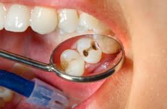
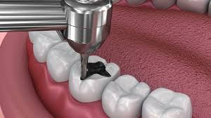
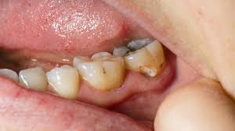

WELCOME TO GATSATA DENTAL PAGE
"Welcome to Gatsata Healthcare, where smiles are our specialty and your dental wellness is our top priority. Step into a world of comfort and care as we embark on a journey towards your brightest, healthiest smile yet. At Gatsata, our dedicated team of dental professionals combines expertise with compassion to ensure your experience is nothing short of exceptional.

!
Certainly! Here's a concise note for a dental test:
Dental Test Note:
Purpose: A dental test aims to assess the oral health and hygiene of an individual, detecting any existing issues or potential concerns.
Components:
Examination of Teeth: Inspection for cavities, decay, and signs of damage.
Gum Health Assessment: Evaluation for gum disease, inflammation, and recession.
Oral Hygiene Evaluation: Analysis of brushing and flossing habits, plaque buildup, and presence of tartar.
X-rays: Radiographic imaging to identify hidden issues such as impacted teeth, bone loss, or cysts.
Oral Cancer Screening: Inspection of oral tissues for abnormalities, lesions, or signs of cancer.
Bite and Jaw Assessment: Examination for alignment issues, malocclusion, or temporomandibular joint (TMJ) disorders.
Recommendations:
Treatment Plan: Based on findings, recommendations may include dental cleanings,

1.Gatsata Health Center prioritizes dental health with cutting-edge equipment and skilled professionals.
2.Patients at Gatsata Health Center receive top-notch dental care tailored to their individual needs.
3.The dental team at Gatsata Health Center utilizes specialized tools and techniques for optimal tooth removal outcomes.
4.With a focus on patient comfort and safety, Gatsata Health Center ensures a seamless experience during dental procedures.
5.Trust in the expertise and dedication of Gatsata Health Center for all your dental health needs.
"Gatsata Health Center is dedicated to comprehensive dental care, employing state-of-the-art tools for precise and efficient tooth removal procedures. Our specialized tools ensure patient comfort and safety while maintaining high standards of dental health. Trust us for gentle and effective dental care at Gatsata Health Center."

From routine cleanings to advanced procedures, trust in our commitment to delivering personalized care tailored to your unique needs. Together, let's embrace the joy of optimal oral health and rediscover the confidence that comes with a radiant smile."
Dental Appointment - gatsata Health Center
Dental Appointment - gatsata Health Center